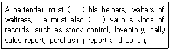
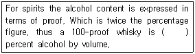
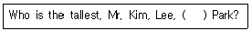
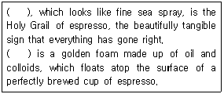

조주기능사 (2010-07-11 기출문제)
1과목: 주류학개론
1. Hot Drink cocktail이 아닌 것은?
- God Father
- Irish Coffee
- Jamaican Coffee
- Tom and Jerry
(정답률: 54%)

2. 다음 중 식욕촉진 와인으로 가장 적합한 것은?
- Dry Sherry Wine
- White Wine
- Red Wine
- Port Wine
(정답률: 66%)
3. 탄산음료에서 탄산가스의 역할이 아닌 것은?
- 당분 분해
- 청량감 부여
- 미생물의 발효 저지
- 향기의 변화 보호
(정답률: 69%)
4. Irish Coffee의 재료가 아닌 것은?
- Irish Whisky
- Rum
- Hot Coffee
- Sugar
(정답률: 88%)
5. 다음 중 Long Drink에 해당하는 것은?
- Side Car
- Stinger
- Royal Fizz
- Manhattan
(정답률: 56%)
6. 다음 술 중 리큐르가 아닌 것은?
- Cointeau
- Seagrams V.O
- Anisette
- Benedictine
(정답률: 77%)
7. Tonic Water에 대한 설명으로 옳은 것은?
- 레몬, 라임, 오렌지, 키니네 껍질 등으로 만든 즙에 당분을 첨가 한 음료이다.
- 커피의 향과 맛을 첨가하여 소화를 도와주고 정신을 맑게 하는 음료이다.
- 사과를 발효하여 만든 음료로서 알코올 6%이다.
- 소다수에 레몬주스와 당분을 섞어 만든 음료이다.
(정답률: 72%)
8. 다음 중 연식증류주에 해당하는 것은?
- Pot still Whisky
- Malt Whisky
- Cognac
- Patent Still Whisky
(정답률: 54%)
9. 쌀, 보리, 조, 수수, 콩 등 5가지 곡식을 물에 불린 후 시루에 쪄 고두밥을 만들고, 누룩 을 섞고 발효시켜 전술을 빚는 것은?
- 율주
- 백화주
- 안동소주
- 연엽주
(정답률: 59%)
10. 황금색 감미주로 병에 D.O.M이라고 표시되어 있는 것은?
- Benedictine
- Curacao
- Charteuse
- Cointreau
(정답률: 79%)
11. 포도주에 아티초크를 배합한 리큐르로 약간 진한 커피색을 띠는 것은?
- Chartreuse
- Cynar
- Dubonnet
- Campari
(정답률: 69%)
12. 생강을 주원료로 만든 탄산음료는?
- Soda Water
- Tonic Water
- Perrier Water
- Ginger Ale
(정답률: 98%)
13. 원료와 주류의 연결이 잘못된 것은?
- Grain - Canadian Whisky
- Malt - Scotch Whisky
- Corn - Canadian Whisky
- Rye - Canadian Whisky
(정답률: 71%)
14. 민속주 도량형 중「되」에 대한 설명으로 틀린 것은?
- 곡식이나 액체, 가루 등의 분량을 재는 것이다.
- 보통 정육면체 또는 직육면체로써 나무나 쇠로 만든다.
- 분량(1되)을 부피의 기준으로 하여 2분의 1을 1홉이라고 한다.
- 1되는 약 1.8리터 정도이다.
(정답률: 74%)
15. 혈중 알코올 농도 측정 공식은?
- 음주량(㎖) × 알코올 도수(%) / 833 × 체중(Kg)
- 음주량(㎖) × 알코올 도수(%) / 체중(Kg)
- 음주량(㎖) × 체중(Kg) × 알코올 도수(%) / 833
- 음주량(㎖) × 체중(Kg) / 833 × 알코올 도수(%)
(정답률: 37%)
16. 커피를 주원료로 만든 리큐르는?
- Grand Marnier
- Benedictine
- Kahlua
- Sloe Gin
(정답률: 95%)
17. 꼬냑의 세계 5대 메이커에 해당하지 않는 것은?
- Hennessy
- Remy Martin
- Camus
- Tauqueray
(정답률: 53%)
18. 다음 혼성주 중 오렌지 껍질을 주원료로 만든 것은?
- Anisette
- Campari
- Triple Sec
- Underberg
(정답률: 85%)
19. 80proof는 알코올 도수(%)로 얼마인가?
- 10 %
- 20 %
- 30 %
- 40 %
(정답률: 86%)
20. 론, 프로방스 지방의 기후 특성은?
- 서늘한 내륙성 기후이다.
- 온화한 지중해성 기후이다.
- 강우가 연중 고른 대서양 기후이다.
- 습윤 대륙성 기후이다.
(정답률: 57%)
21. Dessert Wine과 거리가 먼 것은?
- Port Wine
- Cream Sherry
- Vermouth
- Barsac
(정답률: 48%)
22. 맥주용 보리의 조건이 아닌 것은?
- 껍질이 얇아야 한다.
- 담황색을 띄고 윤택이 있어야 한다.
- 전분 함유량이 적어야 한다.
- 수분 함유량 13% 이하로 잘 건조되어야 한다.
(정답률: 90%)
23. 브랜디의 제조공정에서 증류한 브랜디를 열탕 소독한 White Oak Barrel에 담기 전에 무엇을 채워 유해한 색소나 이물질을 제거 하는가?
- Beer
- Gin
- Red Wine
- White Wine
(정답률: 68%)
24. 보드카의 생산 국가가 나머지 셋과 다른 하나는?
- Smirnoff
- Samovar
- Monarch
- Finlandia
(정답률: 47%)
25. 커피를 재배하기에 적합한 기후와 토양을 가지고 있어 커피벨트(커피존)라고 불리는 지역은?
- 적도 ~ 남위 25도 사이의 지역
- 북위 25도 ~ 남위 25도 사이의 지역
- 북위 25도 ~ 적도 사이의 지역
- 남위 25도 ~ 남위 50도 사이의 지역
(정답률: 70%)
26. 프리미엄 테킬라의 원료는?
- 아가베 아메리카나
- 아가베 아즐 테킬라나
- 아가베 아트로비렌스
- 아가베 시럽
(정답률: 79%)
27. 위스키의 원료가 아닌 것은?
- grape
- Barley
- Wheat
- Oat
(정답률: 70%)
28. 주세법상 알콜분의 정의는?
- 원용량에 포함되어 있는 에틸알콜(섭씨 15도에서 0.7947의 비중을 가진 것)
- 원용량에 포함되어 있는 에틸알콜(섭씨 15도에서 1의 비중을 가진 것)
- 원용량에 포함되어 있는 메틸알콜(섭씨 15도에서 0.7947의 비중을 가진 것)
- 원용량에 포함되어 있는 메틸알콜(섭씨 15도에서 1의 비중을 가진 것)
(정답률: 35%)
29. 커피의 품종이 아닌 것은?
- 아라비카(Arabica)
- 로브스타(Robusta)
- 리베리카(Riberica)
- 얼그레이(Earl Grey)
(정답률: 88%)
30. 프랑스인들이 고지방 식이를 하고도 심장병에 덜 걸리는 현상인 French Paradox의 원인물질로 알려진 것은?
- Red Wine - tannin, chlorophyll
- Red Wine - resveratrol, polyphenols
- White Wine - Vit. A, Vit. C
- White Wine - folic acid, niacin
(정답률: 53%)
2과목: 주장관리개론
31. 조주원의 직무에 관한 설명 중 틀린 것은?
- 주문에 의하여 신속 정확하게 조주 제공한다.
- 칵테일은 수시로 자기 아이디어에 따라 조주한다.
- 글라스류와 바기물을 세척, 청결상태를 유지한다.
- 영업 시작 시간 전에 그날의 소요품을 수령한다.
(정답률: 94%)
32. 휘젓기(Stirring) 기법에서 재료를 섞거나 차게 할 때 사용되는 기구는?
- 스트레이너(Strainer)
- 믹싱 컵(Mixing Cup)
- 스퀴저(Squeezer)
- 바 스푼(Bar Spoon)
(정답률: 58%)
33. 사과를 주원료로 해서 만들어지는 브랜디는?
- Kirsch
- Calvados
- Campari
- Framboise
(정답률: 80%)
34. Cocktail Shaker에 넣어 조주하는 것이 부적합한 재료는?
- 럼(Rum)
- 소다수(Soda Water)
- 우유(Milk)
- 달걀흰자
(정답률: 78%)
35. 주장관리에서 핵심적인 원가의 3요소는?
- 재료비, 인건비, 주장경비
- 세금, 봉사료, 인건비
- 인건비, 주세, 재료비
- 재료비, 세금, 주장경비
(정답률: 94%)
36. 일반적인 와인 보관 요령에 대한 설명 중 틀린 것은?
- 일정한 온도에서 보관한다.
- 와인 속의 찌꺼기가 떠오르는 것을 방지하기위해 진동은 최소화한다.
- 전등불빛이나 햇볕은 와인에 별 영향이 없다.
- 습도는 70 ~ 80% 정도가 적당하다.
(정답률: 90%)
37. 와인의 보관에서 주의할 사항이 아닌 것은?
- 와인은 종류에 관계없이 묵힐수록 좋기 때문에 장기보관 후 판매한다.
- 한번 개봉한 와인은 산소에 의한 변하므로 재보관하지 않도록 한다.
- 와인은 눕혀서 보관해야 한다.
- 코르크 마개가 건조해지지 않도록 한다.
(정답률: 81%)
38. 소주병에 350㎖, 25%라고 기재되어 있을 때 에틸알코올 양은?
- 87.5㎖
- 80㎖
- 70.5㎖
- 60㎖
(정답률: 45%)
39. 가니쉬(Garnish)에 필요한 재료를 상하지 않게 보관하는 곳은?
- 혼합용 용기
- 냉장고
- 냉동실
- 얼음통
(정답률: 93%)
40. 음료를 서빙 할 때에 일반적으로 사용하는 비품이 아닌 것은?
- Napkin
- Coaster
- Serving Tray
- Bar Spoon
(정답률: 80%)
41. White Wine을 차게 제공하는 주된 이유는?
- 타닌의 맛이 강하게 느껴진다.
- 차가울수록 색이 하얗다.
- 유산은 차가울 때 맛이 좋다.
- 차가울 때 더 Fruity한 맛을 준다.
(정답률: 88%)
42. 와인의 마개로 사용되는 코르크 마개의 특성이 아닌 것은?
- 온도변화에 민감하다.
- 코르크 참나무의 외피로 만든다.
- 신축성이 뛰어나다.
- 밀폐성이 있다.
(정답률: 70%)
43. 바(Bar)에 대한 설명 중 틀린 것은?
- 불어의 Bariere 에서 왔다.
- 술을 판매하는 식당을 총칭하는 의미로도 사용된다.
- 종업원만의 휴식공간이다.
- 손님과 바 맨 사이에 가로 질러진 널판을 의미한다.
(정답률: 93%)
44. 빈(Bin)이 의미하는 것은?
- 프랑스산 적포도주
- 주류 저장소에 술병을 넣어 놓는 장소
- 칵테일 조주시 가장 기본이 되는 주재료
- 글라스를 세척하여 담아 놓는 기구
(정답률: 73%)
45. 믹싱 글라스(Mixing Glass)의 설명 중 옳은 것은?
- 칵테일 조주시 음료 혼합물을 섞을 수 있는 기물이다.
- Shaker의 또 다른 명칭이다.
- 칵테일 음료 서비스에 사용되는 유리잔의 총칭이다.
- 칵테일에 혼합되어지는 과일이나 약초를 machines 하기 위한 기물이다.
(정답률: 72%)
46. 와인의 빈티지(Vintage)가 의미하는 것은?
- 포도주의 판매 유효 연도
- 포도의 수확 연도
- 포도의 품종
- 포도주의 도수
(정답률: 81%)
47. 바(Bar) 영업을 하기 위한 Bartender의 역할이 아닌 것은?
- 음료에 대한 충분한 지식을 숙지하여야 한다.
- 칵테일에 필요한 Garnish를 준비한다.
- Bar Counter 내의 청결을 수시로 관리한다.
- 영업장의 책임자로서 모든 영업에 책임을 진다.
(정답률: 96%)
48. Wine Cellar이란?
- 포도주 소매업자
- 포도주 도매업자
- 포도주 저장실
- 포도주를 주재로 한 칵테일 명칭
(정답률: 72%)
49. 보조 병마개를 뜻하는 주장기물은?
- Strainer
- Squeezer
- Stopper
- Blender
(정답률: 76%)
50. Inventory management는 무슨 관리를 뜻하는가?
- 매출관리
- 재고관리
- 원가관리
- 인사관리
(정답률: 82%)
3과목: 고객서비스영어
51. Which one is basic liqueur among the cocktail name which containing "Alexander"?
- Gin
- Vodka
- Whisky
- Rum
(정답률: 28%)
52. "I'll be right back." 에서 밑줄 친 단어와 바꾸어 쓸 수 있는 것은?
- immediately
- just now
- now
- just away
(정답률: 44%)
53. Choose a drink that can be served before a meal.
- Table Wine
- Dessert Wine
- Aperitif Wine
- Juice
(정답률: 75%)
54. 「전화 연결 상태가 좋지 않습니다. 좀 더 크게 말씀해주시겠습니까?」의 가장 적합한 표현은?
- The connection is bad. Will you speak louder?
- The contact is bad. Will you tell louder?
- The line is bad. Will you talk louder?
- The touch is bad. Will you say louder?
(정답률: 50%)
55. ( ) 안에 알맞은 것은?

- take, manage
- supervise, handle
- respect, deal
- manage, careful
(정답률: 60%)
56. ( ) 안에 알맞은 것은?

- 100
- 50
- 75
- 25
(정답률: 80%)
57. 「이 곳은 우리가 머물렀던 호텔이다.」의 표현으로 옳은 것은?
- This is a hotel that we staying.
- This is the hotel where we stayed.
- This is a hotel it we stayed.
- This is the hotel where we stay.
(정답률: 66%)
58. ( )안에 알맞은 것은?

- and
- or
- with
- to
(정답률: 65%)
59. Select the cocktail based on vodka in the following.
- Pick lady
- Kiss of fire
- Honeymoon cocktail
- Olympic
(정답률: 60%)
60. 다음 ( ) 안에 공통적으로 적합한 단어는?

- Crema
- Cupping
- Cappuccino
- Caffe Latte
(정답률: 55%)